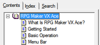
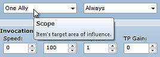

This Help file describes the various features offered by RPG Maker VX Ace.
The left side of the window contains the Help file's contents. Use the context field to select the item you want to view. When you know exactly what you want to find, click the Search tab on the upper left part of the window to perform a more direct search.

This program also provides pop-up hints for most items. Placing the mouse pointer over an item in the editor causes a simple description to pop up. Use this feature to learn more about the program.
